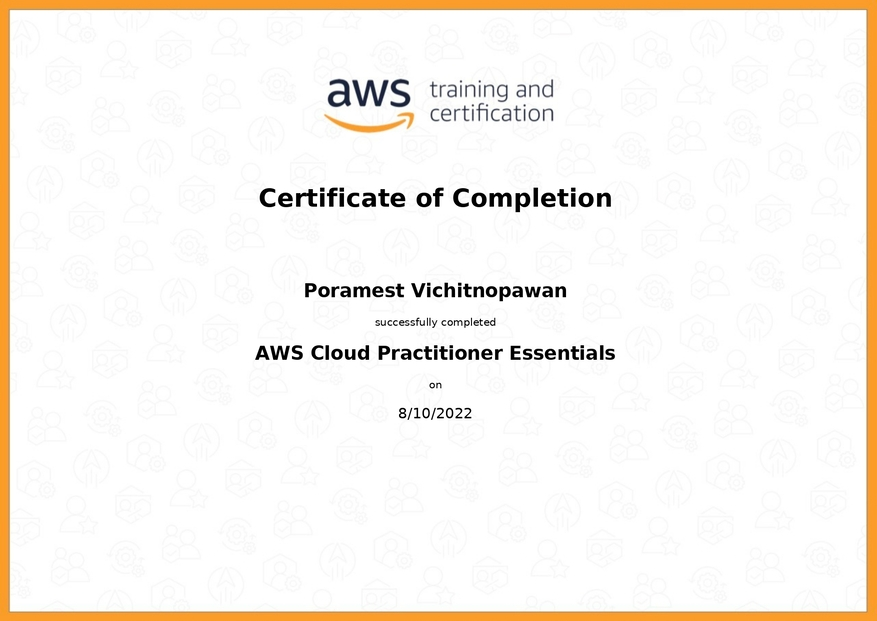

Work
Explore highlights from my previous roles and responsibilities.
Certification
Check out my certifications for a clear view of my skills and qualifications.
-
JLPT N3 Certification

Certified proficiency at the Japanese Language Proficiency Test (JLPT) Level N3.
-
CEFR B2 Certification
Certified proficiency at the CEFR B2 (Upper Intermediate) level.
-
Codegoda 2022
Ranking of 5,351 out of 49,454 participants.
-
Codegoda 2023
Ranking of 1,966 out of 50,233 participants.
-
AWS Cloud Practitioner Essentials
Certified in AWS Cloud Practitioner Essentials.
-
GitHub Pull Request Hackathon .ไทย Universal (2021)
Contribute to creating pull requests for GitHub repositories to facilitate support for the .ไทย domain.